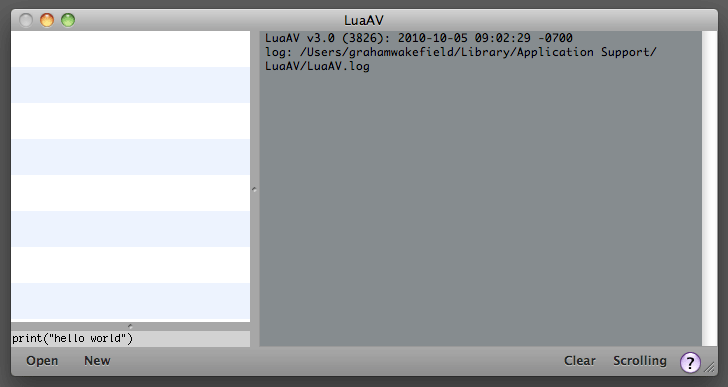
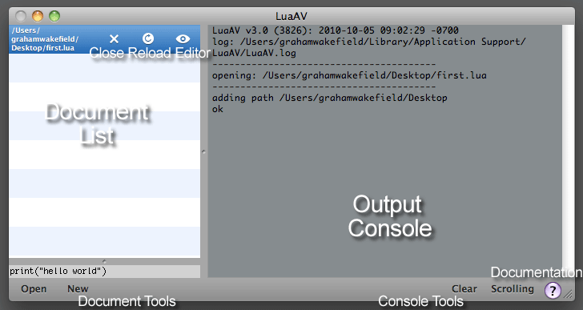

Introduction to LuaAV |
LuaAV can be downloaded as a binary, or built from source.
Once you have LuaAV built, running the application will open up the LuaAV console, which looks something like this:
In addition, you will need to install a text editor for Lua scripts, registered with the operating system file manager as the default editor for files of type .lua. LuaAV does not provide a text-editing interface by default. Instead, Lua scripts can be edited in any text editor of your choice.
While a .lua file is running in LuaAV, it can be edited in the external editor program. When you save the document in the editor, LuaAV detects the file modification and reloads the script. In that sense, LuaAV is more like a script player.
OSX bundles the TextEdit editor, but for a better experience try a text editor which can syntax highlight Lua code, such as TextWrangler (free) or SubEthaEdit. To associate an editor with .lua files on OSX, right-click on a .lua file and choose Get Info, then in the Open With: tab select your editor (use Browse if it is not listed), and then press the Change All button.
Press the ‘New’ button in the LuaAV toolbar (or select File->New in the menu, or press Cmd-N) to create a new script. LuaAV will immediately ask you where to save it, and then open this script in your external text editor. It is pre-filled with just a single Lua statement:
print("ok")
The new script will be also listed in the LuaAV document list sidebar, and an opening message is printed to the output console, followed by the string ok.
The document list shows each Lua script currently running in LuaAV. Clicking the close icon will stop running the script and remove it from the list, clicking the reload icon (or pressing Cmd-R) will close and re-open the script, and clicking editor icon will open the script in whichever external text editor program is associated with .lua files on your system.
The output console prints messages from LuaAV (such as opening files and adding search paths), as well as any text printed from a Lua script using the print() function. Errors will also appear in the output console, marked in red. The clear button (Cmd-X) will clear the contents of the console, and the scrolling button will toggle scrolling on and off.